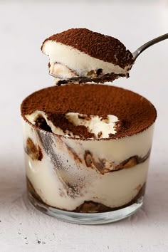

Cuisine Du Monde
Accueil
Catégories
Catégories
Cuisine Tunisienne
Cuisine Française
Cuisine Italienne
Cuisine Asiatique
Types
Types
Salés
Desserts
Contact Info
Rechercher
Recette de Tiramisu
Le tiramisu est le dessert incontournable de la gastronomie italienne.
Tiramisu

Ingrédients:(pour 4 personnes)
16 cuillères de biscuits à la cuillère
1,5 tasse de café
26,5 g de cacao amer ou poudre de cacao non sucrée
166,5 g de mascarpone
53,5 g de sucre roux
2 oeufs
1,5 sachet de sucre vanillé
Réalisation:
Difficulté: Moyen
Préparation: 20 min
Attente: 8h
Temps Total: 20min
Préparation:
Séparez les blancs et les jaunes.
Fouettez les jaunes avec le sucre et le sucre vanillé.
Ajoutez le mascarpone préalablement assoupli et fouettez.
Battez les blancs en neige.
Incorporez-les délicatement au mélange jaunes-sucre-mascarpone.
Imbibez les biscuits dans le café tiédi.
Commencez par tapisser le fond d'un plat type plat à gratin avec une couche de biscuits imbibés.
Ajoutez la moitié de la crème mascarpone.
Recouvrez d'une seconde couche de biscuits.
Ajoutez le reste de la crème.
Couvrez avec du papier film.
Réservez au frais pendant une nuit.
Au moment de servir, saupoudrez de cacao.
Donnez votre avis dans cette recette!
Votre nom et prénom:
Votre avis:
Envoyer